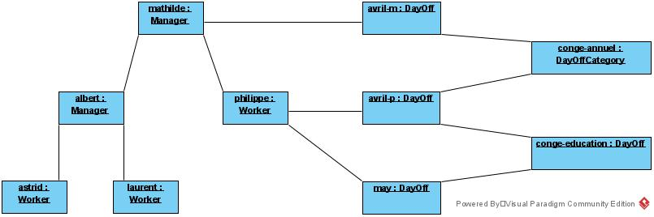
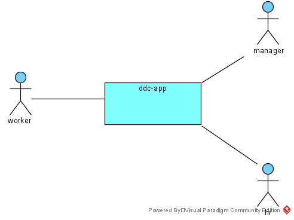
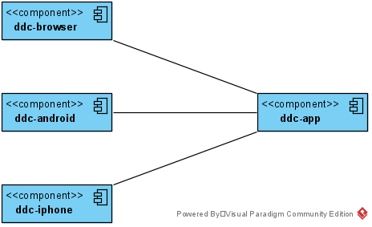
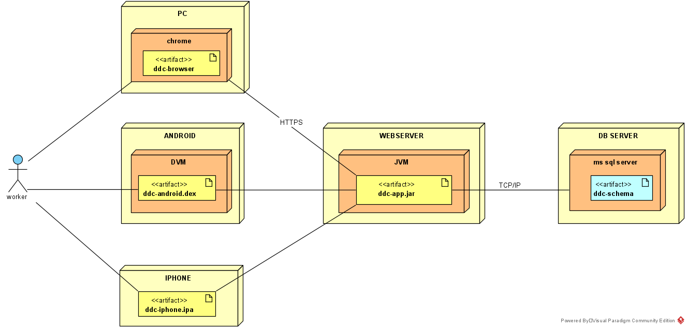

Objectifs de la leçon
- Savoir réaliser l'analyse d'une gestion de demande de congés
- Apprendre à analyser par l'exemple
Durée estimée : entre 1h et 20h, suivant le degré d'implication et le niveau initial.
Type d'enseignement : exercice, apprentissage personnel, support des autres étudiants et du professeur.
Enoncé
Imaginons une entreprise qui souhaite digitaliser son processus de demande de congés.
Actuellement, les demandes de congés sont envoyées par mail ou par un formulaire papier.
Cette manière de faire est inefficace et cause bien des tracas, comme des formulaires perdus, des emails non traités, peu de traçabilité, ...
L'idée est de développer une application web qui centralisera toutes les étapes du processus.
Le processus de demande de congés actuel n'est pas modifié: Le travailleur demande congé. Ensuite, son manager peut approuver ou refuser le congé suivant des besoins de son service. Ensuite, le service RH peut approuver ou refuser le congé en fonction des règles légales et celles en vigueur dans l'entreprise.
Analyse fonctionnelle
Notre analyse fonctionnelle comportera trois vues:
- la vue "business process" qui décrit les processus d'achat-livraison;
- la vue "use case" qui liste les use cases;
- la vue "domaine" qui liste les entités du domaine et leur relation.
Modélisation des processus
Nous utilisons un diagramme d'activités pour modéliser le processus de demande de congé:

Les étapes sont:
- demande conge, le travailleur poste une demande de congé
- vérifie la continuité du service, le manageur vérifie si son service pourra continuer de fonctionner correctement en l'absence du travail, sur cette base, il refuse ou approuve la demande de congé
- verifie solde des congés, si la demande a été approuvée par le manager, le personnel des ressources huamines fait la vérification que le travail a bien le droit de prendre ce congé, sur base du solde des congés, sur cette base, il refuse ou approuve le congé
Dans tous les cas, les approbations et les refus font l'objet d'une notification aux intéressés, à savoir le travailleur et le manager.
Nous notons quelques problèmes à ce processus:
- que se passe-t-il si le travailleur n'introduit pas de demande de congé ?
- que se passe-t-il si le manager ne prend pas position par rapport à un congé, dans un délai raisonnable ?
Ces problèmes devront être résolu en cours de projet.
Modélisation du domaine
{kind=link}
Nous avons les classes:
- Worker qui modélise un travailleur de l'entreprise
- Manager qui modélise un manager de l'entreprise. Manager hérite de Worker car un Manager est un Worker.
- DayOff modélise le congé. Nous avons décidé que la demande de congé était en fait un congé par encore consommé.
- DayOffCategory modélise les différentes sortes de congés.
- Finalement, nous avons la classe DayOffState qui modélise l'état du congé. Ces états seront à priori REQUEST, APPROVED_MANAGER, REFUSED_MANAGER, APPROVED, REFUSED_RH. Nous vérifierons cela dans les étapes suivantes du projet.
Il faut bien comprendre que le diagramme ci-dessus sert à modéliser le domaine, pas l'application. Cependant et en général, ces classes seront implémentées dans l'application, soit telles quelles, soit avec quelques modifications.
Diagramme d'objets
Nous pouvons vérifier notre diagramme de classes en réalisant un diagramme d'objets.
Le diagramme d'objets est une instance du diagramme de classes, c'est-à-dire une réalisation particulière, un exemple, soit:
{kind=link}
Nous avons ici une hiérarchie de travailleurs et managers:
- mathilde qui est le manager de tous les autres;
- albert qui est le manager de astrid et laurent;
- astrid et laurent qui sont des worker ayant albert comme manager;
- philipe qui est un worker et a mathilde pour manager;
- avril-m est une demande de congé de mathilde et sa catégorie est conge-annuel
- avril-p est une demande de congé de philippe aussi de catégorie conge-annuel
- may est une demande de congé de philippe de catégorie conge-education
Notons que les noms donnés aux objets sont purement illustratifs. L'idéal est de trouver des cas réels.
Nous trouverons en annexe l'implémentation java des classes du diagramme de classes du domaine ainsi que l'instanciation correspondant au diagramme d'objets.
Use cases
Nous divisons les use cases en deux packages (groupes):
- operations qui rassemble les use cases importantes effectuées sur les congés
- helper qui rassemble les use cases de confort, nécessaire pour aider les acteurs à réaliser les operations
Operations
Ce package rassemble tous les use cases qui modifient l'état du congé:
{kind=link}
Demande congé
Description
En tant que travailleur, je veux pouvoir demander un congé, ainsi je peux planifier mes vacances, mon temps libre.
Acteurs
- Travailleur: acteur principal
- Manager: acteur secondaire (il veut être informé)
Préconditions
Le travalleur doit être authentifié.
Scénario happy flow
-
Le travailleur introduit les informations relatives à la demande de congé.
La demande de congés contient les informations suivantes
- son matricule
- son nom
- son prénom
- la date de début de congé
- la date de fin de congé
- le type de congé (en chosissant dans une liste proposée par l'application)
- optionnellement, il peut contenir un commentaire
- L'application envoie une notification au travailleur contenant l'information relative à la demande de congé (cf ci-dessus).
- L'application envoie une notification au manager du trailleur contenant l'information relative à la demande congé (cf ci-dessus).
Post conditions
- Le congé a été enregistrée dans la base de données
- L'état du congé est mis à "REQUESTED"
- Une email de confirmation a été envoyé au travailleur
- Un email d'information a été envoyé au manager
Scénario "boss"
Un cas particulier concerne le patron, celui qui n'a pas de chef, celui qui est au sommet de la hiérarchie de l'entreprise.
Dans ce cas, il n'y a pas d'acteur secondaire (Manager), aucun mail d'information n'est envoyé et le congé passe directement à l'état approbation par les ressources humaine:
- Le boss (Travailleur) introduit les informations relatives à la demande de congé (voir scénario précédent)
- L'application envoie une notification de confirmation au boss
Post conditions
- Le congé est enregistré dans la base de données
- L'état du congé est mis à "APPROVED_MANAGER
- Un email de confirmation a été envoyé au boss
Annule congé
Description
En tant que travailleur, je veux pouvoir annuler une demande de congé, ainsi je peux adapter mes demandes de congés aux circonstances.
Acteurs
- Le Travailleur est l'acteur principal
- Le Manager est l'acteur secondaire, il veut être informé de l'annulation du congé
Préconditions
Le Travailleur doit être authentifié.
Scénario happy flow
- Le travailleur sélectionne le congé qu'il souhaite annulé
- Il annule le congé
- L'application envoie une notification de confirmation au travailleur indiquant que l'annulation du congé a bien été prise en compte et contenant les informations relatives au congé annulé.
- L'application envoie une notification au manager indiquant l'annulation du congé et contenant les informations relatives au congé annulé.
Post conditions
- Le congé est mis à jour dans la base de données
- L'état du congé est mis à "CANCELLED"
- Un email de confirmation a été envoyé au travailleur
- Un email d'information est envoyé au manager pour l'informer de l'annulation
Approuve congé - manager
Description
En tant que manager je veux pouvoir approuver un congé demandé par un des travailleurs sous ma responsabilité, ainsi je peux assurer le contentement de mes travailleurs
Et en tant que manager je veux pouvoir refuser un congé demandé par un des travailleurs sous ma responsabilité, ainsi je peux assurer la continuité de mon service.
Acteurs
- Le manager est l'acteur principal
- Le travailleur est l'acteur secondaire, il veut être informé de la décision du manager
Préconditions
Le Manager doit être authentifié.
Scénario approbation happy flow
- Le manager sélectionne le congé
- Le manager soit approuve le congé, soit il refuse.
- S'il refuse, le manager doit indiquer la raison du refus.
- L'application envoie une notification au manager avec toutes les informations concernant le congé.
- L'application envoie un mail d'information au travailleur avec toutes les informations concernant le congé.
Postconditions
- L'état du congé est mis à "APPROVED_MANAGER" ou "REFUSED_MANAGER"
- Le congé est mis à jour dans la base de données
- Un email de confirmation est envoyé au manager
- un email d'information est envoyé au travailleur
Scénario pas d'actions
Le manager ne prend pas d'action dans un temps raisonnable (TODO: quel est le temps raisonnable)?
TODO: est-ce un scénario ou un autre use case?
- L'application détecte qu'une demande de congé n'a pas été traitée par le manager endéans un délai raisonnable
- (TBC) L'application envoie un rappel au manager
- (TBC) L'application envoie un rappel au travailleur
- (TBC) L'application envoie une notification au manager du manager
- (TBC) L'application envoie une notification au rh
- (TBC) L'application force l'approbation ou le refus
Approuve congé - rh
Description
En tant que rh, je veux pouvoir approuver un congé en accord avec les règles ainsi le travailleur a le congé dont il a droit
et en tant que rh, je veux pouvoir refuser un congé en accord avec les règles ainsi le travailleur ne peut pas prendre plus de congé que ce qu'il a droit.
Acteurs
- L'employé de rh est l'acteur principal
- Le travaileur est un acteur secondaire
- Le manageur est un acteur secondaire
Préconditions
- L'employé rh est authentifié
- La demande de congé a été approuvée par le manager (état "MANAGER_APPROVED")
Scénario happy flow
- rh sélectionne une demande de congé à vérifier
- rh approuve ou refuse la demande de congé
- l'application envoie une notification d'approbation ou de refus au travailleur avec toutes les informations sur le congé
- l'application envoie une notification d'approbation ou de refus au manager avec toutes les informations sur le congé
Postconditions
- L'état du congé est modifié en "APPROVED" ou "REFUSED_RH"
- Le congé est mis à jour dans la base de données
- Un email d'information a été envoyé au travailleur
- Un email d'information a été envoyé au manager
Ajoute un congé
Description
En que rh, je veux pouvoir introduire un nouveau congé, ainsi je peux résoudre des situations où le processus s'est mal passé, par exemple, le travailleur n'a pas introduit de demande de congé.
Acteurs
- L'employé du rh est l'acteur principal
- Le travailleur est un acteur secondaire, il veut être informé
- Le manager est un acteur secondaire, il veut être informé
Préconditions
- L'employé rh doit être authentifié
Happy flox
Ce scénario est identique au scénario de la demande de congé, à quelques détails près.
- Le rh introduit un nouveau congé, il précise les même informations que dans le scénario de la demande de congé et il ajoute l'état du congé, soit: "REQUESTED" ou "APPROVED_MANAGER" ou "APPROVED" ou "CONSUMED".
- L'application notifie le travailleur en lui indiquant qu'un congé a été créé par le service des ressources humaines, avec toute l'information décrivant le congé.
- L'application notifie le manager, de façon identique.
Postconditions
- Le congé est enregistré dans la base de données
- Un mail de notification est envoyé au travailleur
- Un mail de notification est envoyé au manager
Modifie un congé
Description
En tant qu'employé rh, je veux pouvoir modifier un congé, ainsi je peux mettre un jour un congé qui ne réprésente plus la situation réel, déboquer des situations, aider les travailleurs et manager
Acteurs
- L'employé du rh est l'acteur principal
- Le travailleur est un acteur secondaire, il veut être informé
- Le manager est un acteur secondaire, il veut être informé
Préconditions
- L'employé rh doit être authentifié
Happy flow
- Le rh sélectionne un congé
-
Le rh modifie le congé, il peut modifier les informations suivantes:
- la date de début de congé
- la date de fin de congé
- le commentaire
- l'état du congé peut être modifié en "REQUESTED", "APPROVED_MANAGER", "APPROVED", "REFUSED_MANAGER", "REFUSED_RH", "CANCELLED", "CONSUMED"
- L'application notifie le travailleur que le congé a été modifié.
- L'application notifie le manager que le congé a été modifié.
Postconditions
- Le congé est mis à jour dans la base de données
- Un mail de notification est envoyé au travailleur
- Un mail de notification est envoyé au manager
Helper
Ce package rassemble tous les use cases de confort:
{kind=link}
Consulte son calendrier
Description
En tant que travailleur, je veux pouvoir consulter mon calendrier des congés ainsi je peux avoir une vue d'ensemble de mes congés, se rappeler quand j'ai congé.
Acteur principal
Le travailleur
Préconditions
Le travailleur doit être authentifiée.
Scénario happy flow
- l'utilisateur sélectionne le calendrier
- l'application affiche le calendrier avec les congés
- l'utilisateur voit le détail de ses congés d'aujourd'hui, de demain et d'hier
Postconditions
Aucune
Remarques
La question de savoir comment se présente le calendrier sera étudiée dans l'analyse technique "ui model".
La question de savoir ce quelles actions sont possibles à partir du calendrier sera abordée dans l'analyse technique "navigation model".
Analyse Technique
Nous étudions le design de l'application DDC. Celui-ci est abordé à travers différentes vues comme expliqué dans la section analyse technique.
database
Le modèle de la base de données est directement calqué sur le diagramme des classes du domaine. Il est modélisé par un diagramme relationnel ou diagramme entités relations:
{kind=link}
{kind=link}
contexte
Le modèle de contexte représente l'application comme une boîte noire pour mieux décrire ses interactions avec le monde extérieur.
{kind=link}
Le diagramme contient:
- app-ddc qui représente l'application, dans son ensemble
- worker, manager, rh qui sont les utilisateurs de l'application
On peut considérer que le diagramme de contexte est version simplifiée du diagramme de use case, où l'on a supprimé les use cases.
component
Le modèle de composants consiste à diviser le système en composants.
Un composant est une notion assez vague pour désigner un partie d'une application qui a une interface bien déterminée.
Pour notre application ddc-app, nous avons:
{kind=link}
où
- ddc-browser est le l'application développée pour être exécutée par le browser
- ddc-android est le l'application développée pour être exécutée par l'Androïd
- ddc-web est l'application développée pour être exécutée par le iPhone
- ddc-app est l'application développée pour être exécutée par le serveur
Nous pouvons diviser ces composants en sous-composants pour décrire l'application en plus de détails mais cela dépasse le cadre de ces notes.
déploiement
Le diagramme de déploiement décrit quels artéfacts sont déployés sur quels nodes. Les artéfacts sont généralement des fichiers, les nodes des ordinateurs ou des machines virtuelles.
Pour établir le diagramme de déploiement, il faut collecter les contraintes techniques:
- comment les utilisateurs vont-ils se connecter à l'application? avec leur PC, un smart phone, de la maison, de l'entreprise?
- quelle architecture choisissons-nous? client-serveur? application web classique? application web avec API? souvent l'architecture est imposée par les ... architecte IT
- quel web serveur? apache? IIS? tomcat? nginx? ...
- quel moteur de base de données (DB engine)? MS SQL Server, mysql, postgreSQL, mariadb, Oracle, MongoDB, ...
- déploiement on-premise ou dans le cloud
Pour notre application, nous voulons que
- les utilisateurs puissent utiliser leur PC, leur smartphone Androïd ou iPhone,
- l'application backend soit écrite java avec le framework sprint boot
- l'application backend soit déployé sur un serveur de l'entreprise
- les données soient sauvegarder dans le serveur MS SQL de l'entreprise
Ce qui donne le diagramme de déploiement suivant:
{kind=link}
où nous avons:
- worker est l'acteur "travailleur". La norme UML ne prévoit pas de montrer les acteurs sur les diagrammes de déploiement, mais je pense que cela les rend plus lisible. Le diagramme montre que le travailleur peut se utiliser l'application à partir d'un PC, d'un smartphone Androïd ou iPhone.
- ddc-android.dex est l'éxécutable à déployer sur les téléphones Androïd.
- ddc-browser est l'ensemble des ressources web exécutées par le browser (html, css, javascript, images, polices caractères, ...)
- ddc-iphone.ipa est l'exécutable à déployer sur les téléphones iPhone
- ddc-app.jar est l'application écrite java avec le framework sprint boot.
- ddc-schema est le schéma de la base de données.
Implémentation
database
Dans le dialect mariadb/mysql, le code de création de la database est:
CREATE DATABASE dayoff;
USE dayoff;
CREATE TABLE day_off_status (
id INTEGER(10) AUTO_INCREMENT NOT NULL PRIMARY KEY,
name VARCHAR(64) NOT NULL UNIQUE
);
CREATE TABLE day_off_category (
id INTEGER(10) AUTO_INCREMENT NOT NULL PRIMARY KEY,
name VARCHAR(64) NOT NULL UNIQUE
);
CREATE TABLE role (
id INTEGER(10) AUTO_INCREMENT NOT NULL PRIMARY KEY,
name VARCHAR(16) NOT NULL UNIQUE
);
CREATE TABLE worker (
id INTEGER(10) AUTO_INCREMENT NOT NULL PRIMARY KEY,
matricule VARCHAR(10) NOT NULL UNIQUE,
firstname VARCHAR(32) NOT NULL,
lastname VARCHAR(32) NOT NULL,
email VARCHAR(128) UNIQUE,
manager_id INTEGER(10),
FOREIGN KEY (manager_id) REFERENCES worker(id)
);
CREATE TABLE worker_role (
worker_id INTEGER(10) NOT NULL,
role_id INTEGER(10) NOT NULL,
PRIMARY KEY (worker_id, role_id),
FOREIGN KEY (worker_id) REFERENCES worker(id),
FOREIGN KEY (role_id) REFERENCES role(id)
);
CREATE TABLE day_off (
id INTEGER(10) AUTO_INCREMENT NOT NULL PRIMARY KEY,
start DATE NOT NULL,
end DATE NOT NULL,
comment VARCHAR(512),
worker_id INTEGER(10) NOT NULL,
day_off_category_id INTEGER(10) NOT NULL,
day_off_status_id INTEGER(10) NOT NULL,
FOREIGN KEY (worker_id) REFERENCES worker(id),
FOREIGN KEY (day_off_category_id) REFERENCES day_off_category(id),
FOREIGN KEY (day_off_status_id) REFERENCES day_off_status(id)
);
Ensuite, nous devons insérer les données de configuration de la database.
INSERT INTO day_off_status VALUES
(1, 'REQUESTED'),
(2, 'APPROVED_MANAGER'),
(3, 'APPROVED_RH'),
(4, 'CONSUMED'),
(5, 'CANCELLED'),
(6, 'REFUSED_MANAGER'),
(7, 'REFUSED_RH');
INSERT INTO day_off_category VALUES
(1, 'Jour fériés'),
(2, 'Vacances annuelles'),
(3, 'Congé d''adoption'),
(4, 'Congé de maternité'),
(5, 'Congé de paternité et congé de copaternité'),
(6, 'Crédit-temps interruption de carrière'),
(7, 'Congé de circonstance'),
(8, 'Congé politique'),
(9, 'Congé éducation payé');
INSERT INTO role VALUES
(1, 'worker'),
(2, 'manager'),
(3, 'rh');
Finalement, nous aurons besoin de données de tests:
INSERT INTO worker VALUES (1, 'Albert', 'de Belgique', 'albert@roi.be', '111', null);
INSERT INTO worker_role VALUES (1, 1);
INSERT INTO worker_role VALUES (1, 2);
INSERT INTO worker VALUES (2, 'Paola', 'Ruffo di Calabria', 'paola@roi.be', '112', 1);
INSERT INTO worker_role VALUES (2, 1);
INSERT INTO worker_role VALUES (2, 2);
INSERT INTO worker_role VALUES (2, 3);
INSERT INTO worker VALUES (3, 'Philipe', 'de Belgique', 'philippe@roi.be', '113', 1);
INSERT INTO worker_role VALUES (3, 1);
INSERT INTO worker_role VALUES (3, 2);
INSERT INTO worker VALUES (4, 'Mathilde', 'd''Udekem d''Acoz', 'mathile@roi.be', '114', 1);
INSERT INTO worker_role VALUES (4, 1);
INSERT INTO worker_role VALUES (4, 2);
INSERT INTO worker VALUES (5, 'Elisabeth', 'de Belgique', 'elisabeth@roi.be', '115', 4);
INSERT INTO worker_role VALUES (5, 1);
INSERT INTO worker_role VALUES (5, 3);
INSERT INTO worker VALUES (6, 'Gabriel', 'de Belgique', 'gabriel@roi.be', '116', 3);
INSERT INTO worker_role VALUES (6, 1);
INSERT INTO worker_role VALUES (6, 3);
INSERT INTO worker VALUES (7, 'Emmanuel', 'de Belgique', 'emmanuel@roi.be', '117', 4);
INSERT INTO worker_role VALUES (7, 1);
INSERT INTO worker VALUES (8, 'Eléonore', 'de Belgique', 'eleonore@roi.be', '118', 3);
INSERT INTO worker_role VALUES (8, 1);
INSERT INTO day_off VALUES (1, '2020-05-20', '2020-05-24', 'voyage dans les Ardennes', 1, 2, 3);
code
Pour illustrer le projet, nous avons écrit une partie du code dans le cadre d'une application console en Java.
Cependant, le code est trop long pour être présenté ici, mais il est disponible au téléchargement dayoff-request.zip.
Annexes
domaine
Une implémentation java du diagramme de classe du domaine est donnée ci-dessous.
Insistons bien sur le fait que le diagramme des classes du domaine n'est pas fait pour être implémentés mais uniquement pour modéliser le domaine et que si nous donnons ici une implémentation, c'est uniquement à titre pédagogique, pour faire le lien entre les diagrammes de classes et le code.
Finalement, remarquons que nous ne suivons pas les bonnes pratiques de java, à savoir mettre les champs (attributs) en privés et de créer des getters/setters, dans le but de simplifier nos exemples afin de nous concentrer sur la correspondance diagramme de classes/code.
Nous avons aussi utilisé un constructeur obsolète de la classe Date, toujours par souci de simplicité et parce que le propos ici n'est pas d'apprendre java.
class Worker
L'implémentation contient deux attributs supplémentaires:
- Manager manager qui est une référence vers le manager du travailleur, c'est l'implémentation de l'association Worker -*---0,1- Manager
-
ArrayList
dayOffs qui est la liste des congés demandés par le travailleurs. - Worker est le constructeur, il facilite l'initialisation de l'objet.
Remarquons que nous n'avons pas mis les champs en private pour simplifier le propos.
Manager
extends veut dire hérite en java.
La classe Worker n'a qu'un champ propre, ArrayList workers qui est la liste des travailleurs
DayOff
DayOff est la classe représentant le congé:
- DayOffStatus status est le status du congé
- DayOffCategory est la catégorie du congé, c'est l'implémentation de la laisions DayOff -*---1- DayOffCategory
DayOffCategory
dayOffs est la liste des congés de la catégorie.
DayOffStatus
Pour ce type de données, nous n'utiliserons pas une classe mais un enum, une énumération.